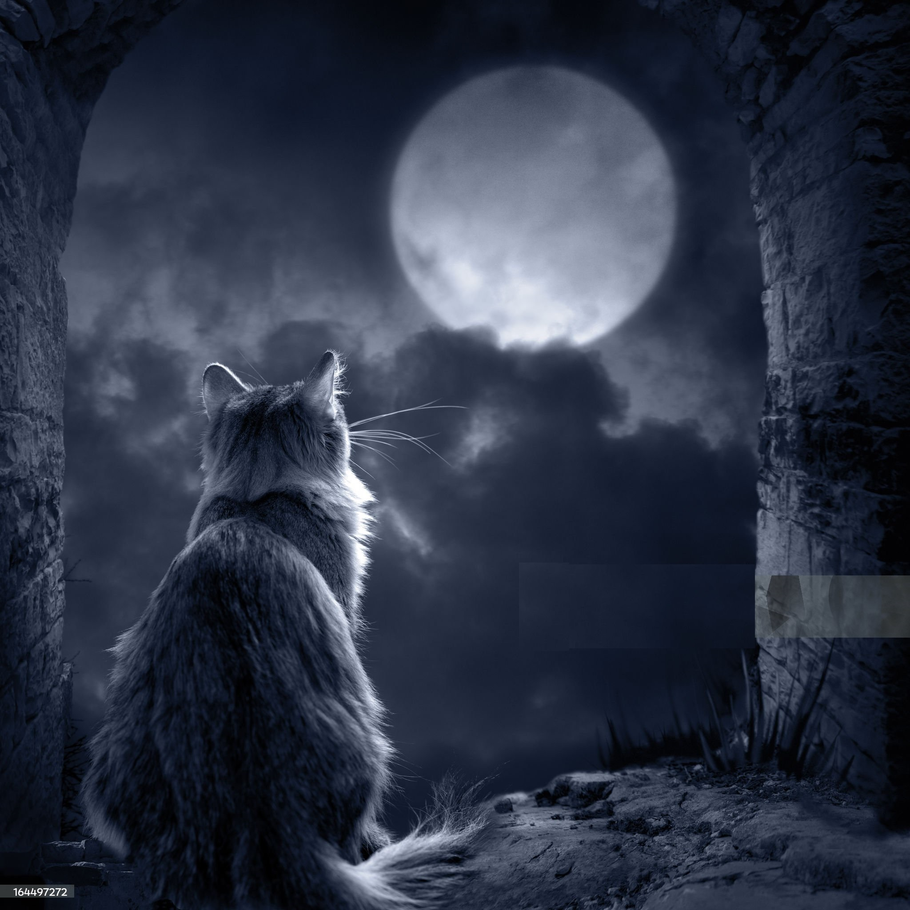
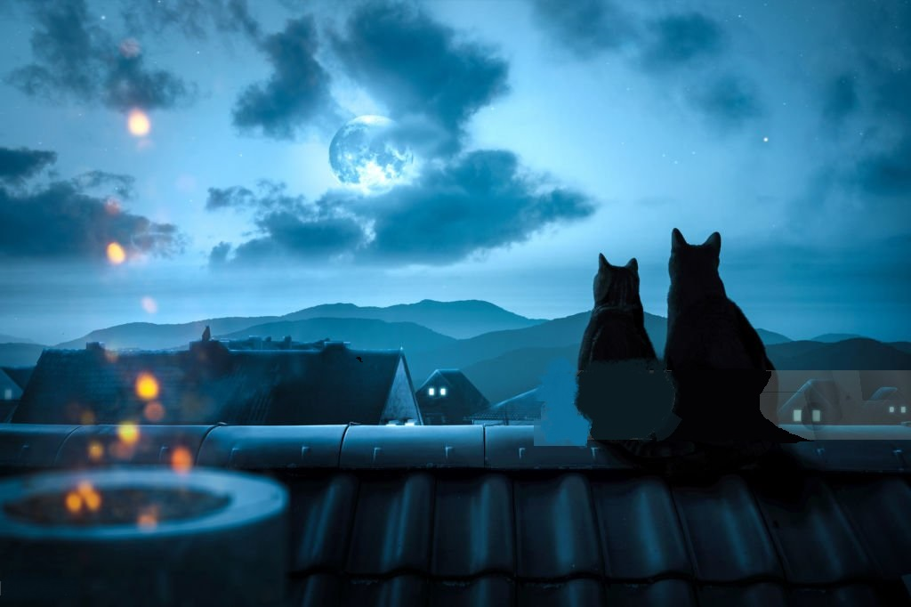
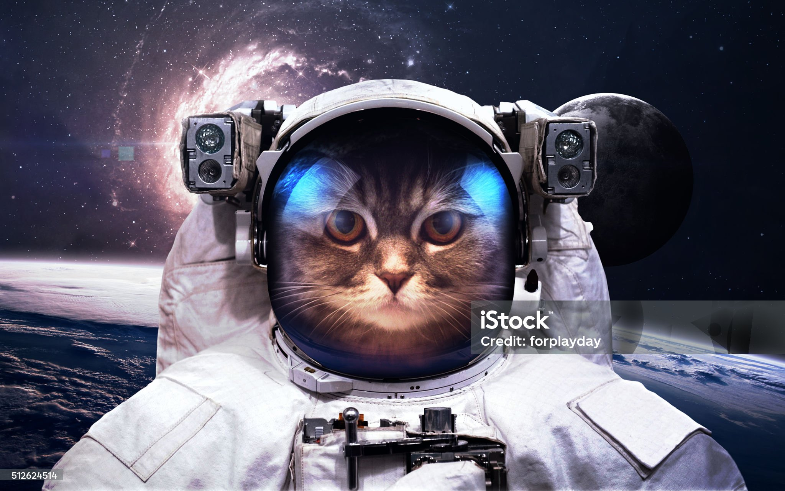

En una noche de luna llena...
En una noche de luna llena, mientras el mundo dormía, Ehl-Julián, el enigmático gato de Humahuaca, se encontraba acechando en los tejados de su territorio. Pero esa noche, algo extraordinario estaba destinado a suceder.
Una hermosa gata callejera, conocida como Carlotta, se acercó a él con una propuesta irresistible. Con un seductor ronroneo y un destello en sus ojos verdes como esmeraldas, Carlotta le susurró al oído a Ehl-Julián sobre una misión secreta en la Luna. Según Carlotta, una civilización felina había establecido una colonia lunar y necesitaba desesperadamente a un agente especial como Ehl-Julián para una tarea crucial.
Intrigado por la posibilidad de aventura y con una curiosidad cósmica palpable, Ehl-Julián aceptó el desafío. Carlotta lo guió hasta un extraño portal dimensional camuflado en un callejón oscuro, donde ambos atravesaron el umbral hacia lo desconocido. Al otro lado, se encontraron en una base lunar futurista, donde gatos de todas las razas y colores realizaban investigaciones científicas avanzadas. Ehl-Julián se maravilló ante el paisaje lunar y la tecnología impresionante que lo rodeaba. Pronto descubrió la verdadera naturaleza de su misión: debía descifrar un enigma cósmico que amenazaba con desestabilizar el universo entero